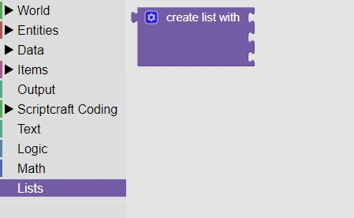
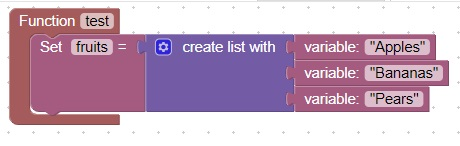

<H1>Lists</h1>
Lists are a way of remembering related items<br>
The list block is located in the Lists Area: <br>
<br>
For example you could make a list of fruits like: <br>
<br>
To add or remove items, click on the gear icon<br>
<hr>
<center></center>